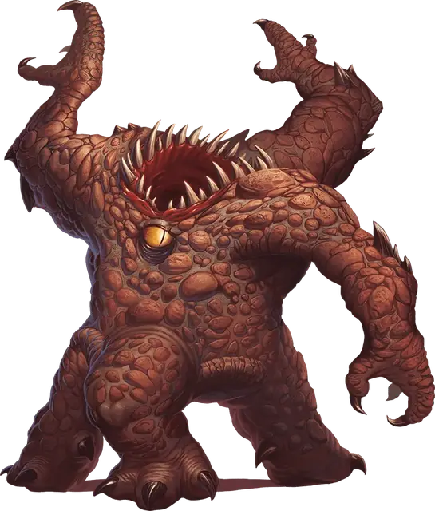

Зорн
Xorn
Средний Элементаль, нейтральный

Класс Доспеха 19 (природный доспех)
Хиты 73 (7к8 + 42)
Скорость 20 футов, копая 20 футов
| мод | спас | ||
|---|---|---|---|
| СИЛ | 17 | +3 | +3 |
| ЛОВ | 10 | +0 | +0 |
| ТЕЛ | 22 | +6 | +6 |
| мод | спас | ||
|---|---|---|---|
| ИНТ | 11 | +0 | +0 |
| МДР | 10 | +0 | +0 |
| ХАР | 11 | +0 | +0 |
Навыки Восприятие +6, Скрытность +3
Сопротивление урону колющий, рубящий от немагических атак, кроме нанесённых адамантиновым оружием
Чувства тёмное зрение 60 футов, чувство вибрации 60 футов, пассивное Восприятие 16
Языки Терран
Опасность 5 (1800 опыта)
Бонус мастерства +3
Среда обитания Подземье
Особенности
Скольжение сквозь землю. Зорн может перемещаться, копая, сквозь немагические и необработанные землю и камень. При этом зорн не беспокоит материал, через который перемещается.
Каменный камуфляж. Зорн совершает с преимуществом проверки Ловкости (Скрытность), когда пытается спрятаться на каменистой местности.
Нюх на сокровища. Зорн может определять по запаху местонахождение драгоценных металлов и камней, таких как монеты и ограненные драгоценные камни, в пределах 60 футов от себя.
Действия
Мультиатака. Зорн совершает три атаки когтем и одну атаку укусом.
Коготь. Рукопашная атака оружием: +6 к попаданию, досягаемость 5 футов, одна цель. Попадание: Рубящий урон 6 (1к6 + 3).
Укус. Рукопашная атака оружием: +6 к попаданию, досягаемость 5 футов, одна цель. Попадание: Колющий урон 13 (3к6 + 3).
Описание
«ВСЕГДА ХРАНИ В КАРМАНЕ ПАРОЧКУ ДРАГОЦЕННЫХ КАМНЕЙ. ГОЛОДНЫЙ ЗОРН — ПОЛЕЗНЫЙ ЗОРН».
— ШЕСТОЕ ПРАВИЛО ВЫЖИВАНИЯ В ПОДЗЕМЕЛЬЯХ МИСТИКА X
Странные существа со Стихийного Плана Земли, зорны вынюхивают драгоценные камни и металлы, после чего пробираются через землю и скалы, чтоб поглотить эти сокровища. На Материальном Плане зорну приходится много перемещаться по Подземью, чтоб прокормить себя, поэтому, если в их рационе не хватает ценных минералов, они становятся агрессивными к шахтерам и искателям сокровищ.
На неестественное происхождение зорнов намекают их необычайно тяжелое тело и огромный мощный рот, расположенный на вершине головы. Три его длинные руки заканчиваются острыми когтями, а его три больших глаза с каменными веками смотрят во всех направлениях.
Стихийные путешественники. Обладающие силой стихийной земли зорны скользят сквозь камень и грязь так же легко, как рыба плавает в воде. При движении они не перемещают землю или камни, а сливаются с ней и проходят, не оставляя ни туннелей, ни дыр, ни намека на свое присутствие.
Зорны предпочитают не покидать свой родной план, где они с легкостью могут поедать запасы драгоценных камней и металлов. Когда зорн попадает на Материальный План, будь то случайно или из любопытства, он в равной мере ищет пропитание и путь домой.
Воры и попрошайки. Зорны блуждают в недрах земли в поисках драгоценных металлов и камней. Из-за неспособности поглощать органическую материю, они игнорируют прочих существ. Однако умение зорна унюхать металлы и камни часто привлекает его внимание к искателям приключений, имеющим при себе монеты и драгоценные камни. Так как зорны не злые, они выпрашивают или торгуются, предлагая информацию, полученную ими в путешествии, в обмен на сокровища. При отказе зорны переходят к угрозам и запугиванию. Голодающие или разозленные они прибегают к силе.